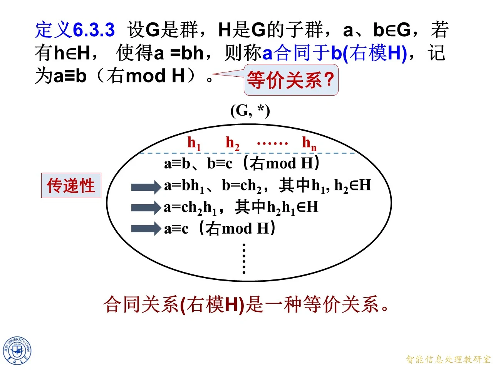
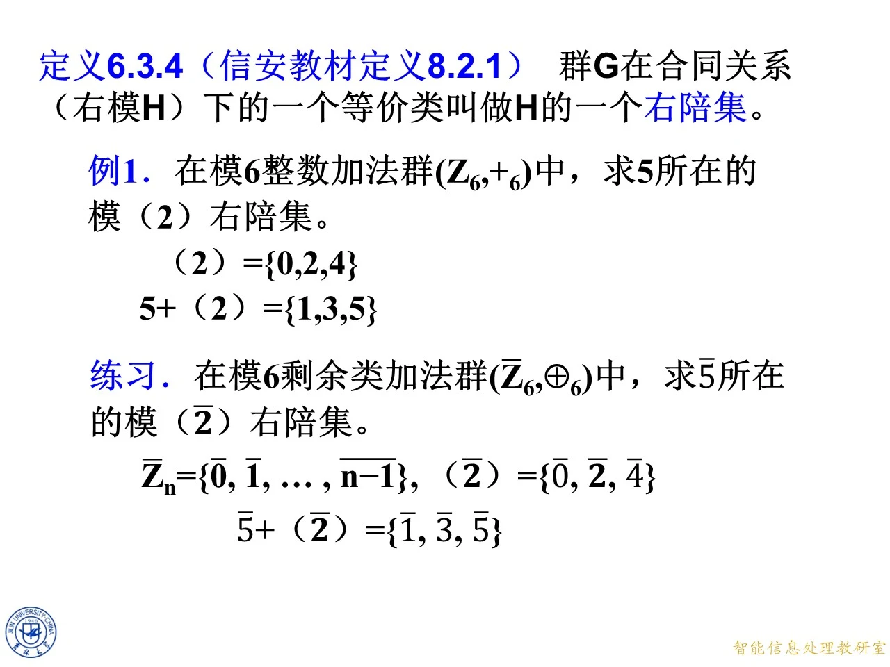

本讲进入第八章群论的核心一节：子群的陪集。上一节我们学习了子群及其判别条件，本节把整数同余的思想推广到任意群上，用子群定义一种“模 H 合同关系”，证明它是等价关系，其等价类就是陪集；随后给出陪集的七条基本性质，并由性质推出著名的拉格朗日定理，即有限群中子群的元素个数整除群的元素个数。下一节的正规子群与商群将建立在陪集概念之上，因此本讲的定义与记号务必掌握扎实。课件把代表元乘在左侧得到的集合称为右陪集；许多其他教材把这种集合称为左陪集，本章全程沿用课件命名。注意本讲由两个网站目录主题共用：前半部分是模子群合同与陪集的定义，后半部分是陪集的性质，按目录顺序分两大段讲解。
8.3.1 模子群合同与陪集的定义
先从一个具体的模 6 例子入手，看"一个元素与一个子群整体运算"会发生什么；然后给出定义 6.3.3（右模 H 合同），在例子里逐元素验证合同关系；接着证明合同关系是等价关系；最后由定义 6.3.4 引出右陪集，并给出求一个和求全部陪集的具体方法。
◆ p.321 章封面为过渡页（本章群、环、域的标题页），p.322 进入节标题"8.3 子群的陪集"。
例 6：把元素与子群整体相加
◆ p.322-323 ｜例 6 的设定
课件设 Z 6 = { 0 , 1 , 2 , 3 , 4 , 5 } Z_6=\{0,1,2,3,4,5\} Z 6 = { 0 , 1 , 2 , 3 , 4 , 5 } x x x 6 − x 6-x 6 − x { 0 } \{0\} { 0 } Z 6 Z_6 Z 6 H 1 = { 0 , 3 } H_1=\{0,3\} H 1 = { 0 , 3 } 3 ⊕ 6 3 = 0 3\oplus_6 3=0 3 ⊕ 6 3 = 0 H 2 = { 0 , 2 , 4 } H_2=\{0,2,4\} H 2 = { 0 , 2 , 4 } 2 ⊕ 6 2 = 4 2\oplus_6 2=4 2 ⊕ 6 2 = 4 2 ⊕ 6 4 = 0 2\oplus_6 4=0 2 ⊕ 6 4 = 0 { 0 , 3 } \{0,3\} { 0 , 3 } Z 6 Z_6 Z 6 1 ⊕ { 0 , 3 } = 1\oplus\{0,3\}= 1 ⊕ { 0 , 3 } =
◆ p.324-325 ｜逐元素相加
课件在图中圈出 { 1 , 4 } \{1,4\} { 1 , 4 } 1 ⊕ { 0 , 3 } = 1\oplus\{0,3\}= 1 ⊕ { 0 , 3 } = 4 ⊕ { 0 , 3 } = 4\oplus\{0,3\}= 4 ⊕ { 0 , 3 } = a ⊕ H a\oplus H a ⊕ H a a a H H H 1 ⊕ 0 = 1 1\oplus 0=1 1 ⊕ 0 = 1 1 ⊕ 3 = 4 1\oplus 3=4 1 ⊕ 3 = 4 1 ⊕ { 0 , 3 } = { 1 , 4 } 1\oplus\{0,3\}=\{1,4\} 1 ⊕ { 0 , 3 } = { 1 , 4 } 4 ⊕ 0 = 4 4\oplus 0=4 4 ⊕ 0 = 4 4 ⊕ 3 = 7 ≡ 1 ( m o d 6 ) 4\oplus 3=7\equiv 1\pmod 6 4 ⊕ 3 = 7 ≡ 1 ( mod 6 ) 4 ⊕ { 0 , 3 } = { 4 , 1 } = { 1 , 4 } 4\oplus\{0,3\}=\{4,1\}=\{1,4\} 4 ⊕ { 0 , 3 } = { 4 , 1 } = { 1 , 4 }
◆ p.326-327 ｜另两个代表
课件继续算 2 2 2 5 5 5 2 ⊕ 0 = 2 2\oplus 0=2 2 ⊕ 0 = 2 2 ⊕ 3 = 5 2\oplus 3=5 2 ⊕ 3 = 5 { 2 , 5 } \{2,5\} { 2 , 5 } 5 ⊕ 0 = 5 5\oplus 0=5 5 ⊕ 0 = 5 5 ⊕ 3 = 8 ≡ 2 ( m o d 6 ) 5\oplus 3=8\equiv 2\pmod 6 5 ⊕ 3 = 8 ≡ 2 ( mod 6 ) { 5 , 2 } = { 2 , 5 } \{5,2\}=\{2,5\} { 5 , 2 } = { 2 , 5 } { 0 , 3 } \{0,3\} { 0 , 3 } { 1 , 4 } \{1,4\} { 1 , 4 } { 2 , 5 } \{2,5\} { 2 , 5 } Z 6 Z_6 Z 6
◆ p.328-330 ｜补齐全部六个代表并观察规律
课件把六个元素全部算完：0 ⊕ { 0 , 3 } = { 0 , 3 } 0\oplus\{0,3\}=\{0,3\} 0 ⊕ { 0 , 3 } = { 0 , 3 } 3 ⊕ { 0 , 3 } = { 3 , 6 ≡ 0 } = { 0 , 3 } 3\oplus\{0,3\}=\{3,6\equiv 0\}=\{0,3\} 3 ⊕ { 0 , 3 } = { 3 , 6 ≡ 0 } = { 0 , 3 }
代表 a a a
a ⊕ { 0 , 3 } a\oplus\{0,3\} a ⊕ { 0 , 3 }
0 0 0 { 0 , 3 } \{0,3\} { 0 , 3 }
1 1 1 { 1 , 4 } \{1,4\} { 1 , 4 }
2 2 2 { 2 , 5 } \{2,5\} { 2 , 5 }
3 3 3 { 0 , 3 } \{0,3\} { 0 , 3 }
4 4 4 { 1 , 4 } \{1,4\} { 1 , 4 }
5 5 5 { 2 , 5 } \{2,5\} { 2 , 5 }
六个代表只产生三个不同的集合，且这三个集合互不相交、并起来恰是 Z 6 Z_6 Z 6
拓展 （课件外补充）：之所以每个集合恰好出现两次，是因为 0 0 0 3 3 3 a ⊕ { 0 , 3 } a\oplus\{0,3\} a ⊕ { 0 , 3 } ( a ⊕ 3 ) ⊕ { 0 , 3 } (a\oplus 3)\oplus\{0,3\} ( a ⊕ 3 ) ⊕ { 0 , 3 } 3 ⊕ 3 = 0 3\oplus 3=0 3 ⊕ 3 = 0 { 1 , 4 } \{1,4\} { 1 , 4 } 1 ⊕ 1 = 2 ∉ { 1 , 4 } 1\oplus 1=2\notin\{1,4\} 1 ⊕ 1 = 2 ∈ / { 1 , 4 }
◆ p.331 ｜换一个子群再试
课件换用另一个子群 H 2 = { 0 , 2 , 4 } H_2=\{0,2,4\} H 2 = { 0 , 2 , 4 } { 0 , 2 , 4 } \{0,2,4\} { 0 , 2 , 4 } 0 , 2 , 4 , 1 , 3 , 5 0,2,4,1,3,5 0 , 2 , 4 , 1 , 3 , 5 { 0 , 2 , 4 } \{0,2,4\} { 0 , 2 , 4 }

课件原图 · 第八章-5-原版（合并来源第 409 页 / 本份第 89 页） · 第 409 页 查看前后已收录原页 → 定义 6.3.3：右模 H 合同
◆ p.332 ｜定义正文
定义 6.3.3 ：设 G G G H H H G G G a , b ∈ G a,b\in G a , b ∈ G h ∈ H h\in H h ∈ H a = b h a=bh a = bh a a a b b b H H H a ≡ b a\equiv b a ≡ b H H H a a a b b b h h h a = b + h a=b+h a = b + h
拓展 （课件外补充）：这个条件等价于 b − 1 a ∈ H b^{-1}a\in H b − 1 a ∈ H a = b h a=bh a = bh b − 1 b^{-1} b − 1 b − 1 a = h ∈ H b^{-1}a=h\in H b − 1 a = h ∈ H b − 1 a = h ∈ H b^{-1}a=h\in H b − 1 a = h ∈ H a = b h a=bh a = bh
◆ p.333-334 ｜合同关系的示意图
课件画出 ( G , ∗ ) (G,*) ( G , ∗ ) h 1 , h 2 , … , h n h_1,h_2,\ldots,h_n h 1 , h 2 , … , h n H H H a a a b b b h 2 h_2 h 2 a = b ∗ h 2 a=b*h_2 a = b ∗ h 2 b b b a a a
◆ p.335-338 ｜在 Z 6 Z_6 Z 6 H = { 0 , 3 } H=\{0,3\} H = { 0 , 3 } 0 = 0 ⊕ 0=0\oplus 0 = 0 ⊕ h = 0 ∈ H h=0\in H h = 0 ∈ H 0 = 0 ⊕ 0 0=0\oplus 0 0 = 0 ⊕ 0 0 ≡ 0 0\equiv 0 0 ≡ 0 { 0 , 3 } \{0,3\} { 0 , 3 } 0 = 3 ⊕ 0=3\oplus 0 = 3 ⊕ h = 3 ∈ H h=3\in H h = 3 ∈ H 0 = 3 ⊕ 3 0=3\oplus 3 0 = 3 ⊕ 3 3 ⊕ 3 = 6 ≡ 0 3\oplus 3=6\equiv 0 3 ⊕ 3 = 6 ≡ 0 0 ≡ 3 0\equiv 3 0 ≡ 3 { 0 , 3 } \{0,3\} { 0 , 3 } { 0 , 3 } \{0,3\} { 0 , 3 } { 0 , 3 } \{0,3\} { 0 , 3 }
◆ p.339-342 ｜3 与谁合同
课件继续：3 = 0 ⊕ 3 3=0\oplus 3 3 = 0 ⊕ 3 3 ≡ 0 3\equiv 0 3 ≡ 0 { 0 , 3 } \{0,3\} { 0 , 3 } 3 = 3 ⊕ 0 3=3\oplus 0 3 = 3 ⊕ 0 3 ≡ 3 3\equiv 3 3 ≡ 3 { 0 , 3 } \{0,3\} { 0 , 3 } { 0 , 3 } \{0,3\} { 0 , 3 } a = a ⊕ 0 a=a\oplus 0 a = a ⊕ 0 0 ∈ H 0\in H 0 ∈ H
◆ p.343-348 ｜1、4 的合同判断
课件对 1 1 1 4 4 4 1 = 1 ⊕ 0 1=1\oplus 0 1 = 1 ⊕ 0 1 ≡ 1 1\equiv 1 1 ≡ 1 1 = 4 ⊕ 3 1=4\oplus 3 1 = 4 ⊕ 3 4 ⊕ 3 = 7 ≡ 1 4\oplus 3=7\equiv 1 4 ⊕ 3 = 7 ≡ 1 1 ≡ 4 1\equiv 4 1 ≡ 4 4 = 1 ⊕ 3 4=1\oplus 3 4 = 1 ⊕ 3 4 ≡ 1 4\equiv 1 4 ≡ 1 4 = 4 ⊕ 0 4=4\oplus 0 4 = 4 ⊕ 0 4 ≡ 4 4\equiv 4 4 ≡ 4 { 1 , 4 } \{1,4\} { 1 , 4 } { 0 , 3 } \{0,3\} { 0 , 3 } a ⊕ { 0 , 3 } a\oplus\{0,3\} a ⊕ { 0 , 3 }
◆ p.349-360 ｜2、5 的合同判断，分类完成
课件最后对 2 , 5 2,5 2 , 5 2 = 2 ⊕ 0 2=2\oplus 0 2 = 2 ⊕ 0 2 ≡ 2 2\equiv 2 2 ≡ 2 2 = 5 ⊕ 3 2=5\oplus 3 2 = 5 ⊕ 3 5 ⊕ 3 = 8 ≡ 2 5\oplus 3=8\equiv 2 5 ⊕ 3 = 8 ≡ 2 2 ≡ 5 2\equiv 5 2 ≡ 5 5 = 2 ⊕ 3 5=2\oplus 3 5 = 2 ⊕ 3 5 ≡ 2 5\equiv 2 5 ≡ 2 5 = 5 ⊕ 0 5=5\oplus 0 5 = 5 ⊕ 0 5 ≡ 5 5\equiv 5 5 ≡ 5 { 0 , 3 } \{0,3\} { 0 , 3 } { 1 , 4 } \{1,4\} { 1 , 4 } { 2 , 5 } \{2,5\} { 2 , 5 } { 0 , 3 } \{0,3\} { 0 , 3 } Z 6 Z_6 Z 6
◆ p.361-374 ｜合同关系的完整矩阵（拓展演示）
课件用同样的动画把右模 { 0 , 3 } \{0,3\} { 0 , 3 } 0 ≡ 0 0\equiv 0 0 ≡ 0 0 ≡ 3 0\equiv 3 0 ≡ 3 1 ≡ 1 1\equiv 1 1 ≡ 1 1 ≡ 4 1\equiv 4 1 ≡ 4 2 ≡ 2 2\equiv 2 2 ≡ 2 2 ≡ 5 2\equiv 5 2 ≡ 5
例 6 续：换用子群 {0,2,4} 的合同关系
◆ p.375-377 ｜第二组演示开始
课件回到例 6 的框架，但这次把 { 0 , 2 , 4 } \{0,2,4\} { 0 , 2 , 4 } 0 = 0 ⊕ 0=0\oplus 0 = 0 ⊕ 0 = 2 ⊕ 0=2\oplus 0 = 2 ⊕ 0 = 4 ⊕ 0=4\oplus 0 = 4 ⊕
◆ p.378-381 ｜0 与偶数全体合同
逐条验证（模 6 加法）：0 = 0 ⊕ 0 0=0\oplus 0 0 = 0 ⊕ 0 0 ≡ 0 0\equiv 0 0 ≡ 0 { 0 , 2 , 4 } \{0,2,4\} { 0 , 2 , 4 } 0 = 2 ⊕ 4 0=2\oplus 4 0 = 2 ⊕ 4 2 ⊕ 4 = 6 ≡ 0 2\oplus 4=6\equiv 0 2 ⊕ 4 = 6 ≡ 0 0 ≡ 2 0\equiv 2 0 ≡ 2 0 = 4 ⊕ 2 0=4\oplus 2 0 = 4 ⊕ 2 4 ⊕ 2 = 6 ≡ 0 4\oplus 2=6\equiv 0 4 ⊕ 2 = 6 ≡ 0 0 ≡ 4 0\equiv 4 0 ≡ 4 { 0 , 2 , 4 } \{0,2,4\} { 0 , 2 , 4 }
◆ p.382-389 ｜2、4 的判断
课件对 2 2 2 4 4 4 2 = 0 ⊕ 2 2=0\oplus 2 2 = 0 ⊕ 2 2 ≡ 0 2\equiv 0 2 ≡ 0 2 = 2 ⊕ 0 2=2\oplus 0 2 = 2 ⊕ 0 2 ≡ 2 2\equiv 2 2 ≡ 2 2 = 4 ⊕ 4 2=4\oplus 4 2 = 4 ⊕ 4 4 ⊕ 4 = 8 ≡ 2 4\oplus 4=8\equiv 2 4 ⊕ 4 = 8 ≡ 2 2 ≡ 4 2\equiv 4 2 ≡ 4 4 = 0 ⊕ 4 4=0\oplus 4 4 = 0 ⊕ 4 4 ≡ 0 4\equiv 0 4 ≡ 0 4 = 2 ⊕ 2 4=2\oplus 2 4 = 2 ⊕ 2 2 ⊕ 2 = 4 2\oplus 2=4 2 ⊕ 2 = 4 4 ≡ 2 4\equiv 2 4 ≡ 2 4 = 4 ⊕ 0 4=4\oplus 0 4 = 4 ⊕ 0 4 ≡ 4 4\equiv 4 4 ≡ 4
◆ p.390-398 ｜奇数自成一类
课件对奇数 1 , 3 , 5 1,3,5 1 , 3 , 5 1 = 1 ⊕ 0 1=1\oplus 0 1 = 1 ⊕ 0 1 ≡ 1 1\equiv 1 1 ≡ 1 1 = 3 ⊕ 4 1=3\oplus 4 1 = 3 ⊕ 4 3 ⊕ 4 = 7 ≡ 1 3\oplus 4=7\equiv 1 3 ⊕ 4 = 7 ≡ 1 1 ≡ 3 1\equiv 3 1 ≡ 3 1 = 5 ⊕ 2 1=5\oplus 2 1 = 5 ⊕ 2 5 ⊕ 2 = 7 ≡ 1 5\oplus 2=7\equiv 1 5 ⊕ 2 = 7 ≡ 1 1 ≡ 5 1\equiv 5 1 ≡ 5 3 = 1 ⊕ 2 3=1\oplus 2 3 = 1 ⊕ 2 3 ≡ 1 3\equiv 1 3 ≡ 1 3 = 3 ⊕ 0 3=3\oplus 0 3 = 3 ⊕ 0 3 ≡ 3 3\equiv 3 3 ≡ 3 3 = 5 ⊕ 4 3=5\oplus 4 3 = 5 ⊕ 4 5 ⊕ 4 = 9 ≡ 3 5\oplus 4=9\equiv 3 5 ⊕ 4 = 9 ≡ 3 3 ≡ 5 3\equiv 5 3 ≡ 5 5 = 1 ⊕ 4 5=1\oplus 4 5 = 1 ⊕ 4 1 ⊕ 4 = 5 1\oplus 4=5 1 ⊕ 4 = 5 5 ≡ 1 5\equiv 1 5 ≡ 1 5 = 3 ⊕ 2 5=3\oplus 2 5 = 3 ⊕ 2 3 ⊕ 2 = 5 3\oplus 2=5 3 ⊕ 2 = 5 5 ≡ 3 5\equiv 3 5 ≡ 3 5 = 5 ⊕ 0 5=5\oplus 0 5 = 5 ⊕ 0 5 ≡ 5 5\equiv 5 5 ≡ 5 { 0 , 2 , 4 } \{0,2,4\} { 0 , 2 , 4 } Z 6 Z_6 Z 6 { 0 , 2 , 4 } \{0,2,4\} { 0 , 2 , 4 } { 1 , 3 , 5 } \{1,3,5\} { 1 , 3 , 5 }
拓展 （课件外补充）：对比两个子群的分类——模 { 0 , 3 } \{0,3\} { 0 , 3 } { 0 , 2 , 4 } \{0,2,4\} { 0 , 2 , 4 } ∣ G ∣ |G| ∣ G ∣ { 0 , 3 } \{0,3\} { 0 , 3 } { 0 , 2 , 4 } \{0,2,4\} { 0 , 2 , 4 } 3 − 0 = 3 3-0=3 3 − 0 = 3 { 0 , 2 , 4 } \{0,2,4\} { 0 , 2 , 4 }
◆ p.399-402 ｜合同关系是等价关系吗？自反性
课件提出问题：这个合同关系是等价关系吗？等价关系需要验证自反、对称、传递三条。先验证自反性：对任意 a ∈ G a\in G a ∈ G a = a ∗ 1 a=a*1 a = a ∗ 1 1 ∈ H 1\in H 1 ∈ H a ≡ a a\equiv a a ≡ a H H H
◆ p.403-405 ｜对称性
若 a ≡ b a\equiv b a ≡ b H H H a = b h a=bh a = bh h ∈ H h\in H h ∈ H h h h b = a h − 1 b=ah^{-1} b = a h − 1 h − 1 ∈ H h^{-1}\in H h − 1 ∈ H b ≡ a b\equiv a b ≡ a H H H b b b H H H
◆ p.406-409 ｜传递性与结论
若 a ≡ b a\equiv b a ≡ b b ≡ c b\equiv c b ≡ c H H H a = b h 1 a=bh_1 a = b h 1 b = c h 2 b=ch_2 b = c h 2 h 1 , h 2 ∈ H h_1,h_2\in H h 1 , h 2 ∈ H a = ( c h 2 ) h 1 = c ( h 2 h 1 ) a=(ch_2)h_1=c(h_2h_1) a = ( c h 2 ) h 1 = c ( h 2 h 1 ) h 2 h 1 ∈ H h_2h_1\in H h 2 h 1 ∈ H a ≡ c a\equiv c a ≡ c H H H 合同关系（右模 H H H 。证明全程只用了子群的四条性质：含单位元、含逆元、乘法封闭、群运算满足结合律。
拓展 （课件外补充）：注意传递性一步中因子次序是 h 2 h 1 h_2h_1 h 2 h 1 h 1 h 2 h_1h_2 h 1 h 2 b = c h 2 b=ch_2 b = c h 2 a = b h 1 a=bh_1 a = b h 1 h 2 h_2 h 2 c c c h 1 h 2 h_1h_2 h 1 h 2 h 2 h 1 h_2h_1 h 2 h 1 H H H
定义 6.3.4：右陪集
◆ p.410-414 ｜定义与第一个例子
定义 6.3.4 （信安教材定义 8.2.1）：群 G G G H H H H H H H = { 0 , 3 } H=\{0,3\} H = { 0 , 3 } { 0 , 3 } \{0,3\} { 0 , 3 } { 1 , 4 } \{1,4\} { 1 , 4 } { 2 , 5 } \{2,5\} { 2 , 5 } 0 ⊕ H 0\oplus H 0 ⊕ H 3 ⊕ H 3\oplus H 3 ⊕ H 1 ⊕ H 1\oplus H 1 ⊕ H 4 ⊕ H 4\oplus H 4 ⊕ H 2 ⊕ H 2\oplus H 2 ⊕ H 5 ⊕ H 5\oplus H 5 ⊕ H H H H b b b b ⊕ H = { b ⊕ h : h ∈ H } b\oplus H=\{b\oplus h:h\in H\} b ⊕ H = { b ⊕ h : h ∈ H } b H = { b h : h ∈ H } bH=\{bh:h\in H\} b H = { bh : h ∈ H }
◆ p.415-422 ｜不同子群、不同陪集；陪集相等或不相交
课件总结两点。其一：不同的子群会产生出不同的右模合同关系，也就会得到不同的右陪集（例 6 的两套分类就是明证）。其二，换用子群 { 0 , 2 , 4 } \{0,2,4\} { 0 , 2 , 4 } 0 ⊕ H 0\oplus H 0 ⊕ H 2 ⊕ H 2\oplus H 2 ⊕ H 4 ⊕ H 4\oplus H 4 ⊕ H 1 ⊕ H 1\oplus H 1 ⊕ H 3 ⊕ H 3\oplus H 3 ⊕ H 5 ⊕ H 5\oplus H 5 ⊕ H 任意两个右陪集或者相等，或者不相交 。在例子里看得非常直观：1 ⊕ H 1\oplus H 1 ⊕ H 5 ⊕ H 5\oplus H 5 ⊕ H { 1 , 3 , 5 } \{1,3,5\} { 1 , 3 , 5 } 0 ⊕ H = { 0 , 2 , 4 } 0\oplus H=\{0,2,4\} 0 ⊕ H = { 0 , 2 , 4 }
◆ p.423-428 ｜怎样求 a a a G G G H H H G G G a a a ( G , ∗ ) (G,*) ( G , ∗ ) H H H h 1 = 1 , h 2 , h 3 , … , h n h_1=1, h_2, h_3, \ldots, h_n h 1 = 1 , h 2 , h 3 , … , h n h 1 h_1 h 1 a a a
◆ p.429-437 ｜陪集的表达式
课件逐步写出答案：把 a a a H H H a ∗ 1 a*1 a ∗ 1 a ∗ h 2 a*h_2 a ∗ h 2 a ∗ h 3 a*h_3 a ∗ h 3 … \ldots … a ∗ H = { a ∗ h ∣ h ∈ H } . a*H=\{a*h\mid h\in H\}. a ∗ H = { a ∗ h ∣ h ∈ H } . a a a a ∈ a ∗ H a\in a*H a ∈ a ∗ H a = a ∗ 1 a=a*1 a = a ∗ 1 1 ∈ H 1\in H 1 ∈ H a ∗ 1 a*1 a ∗ 1
◆ p.438-439 ｜陪集的大小（思考题）
课件给出记号总结：a a a a H aH a H ∣ H ∣ = n |H|=n ∣ H ∣ = n ∣ a H ∣ = |aH|= ∣ a H ∣ = ∣ a H ∣ = n |aH|=n ∣ a H ∣ = n h ↦ a ∗ h h\mapsto a*h h ↦ a ∗ h H H H a H aH a H a ∗ h 1 = a ∗ h 2 a*h_1=a*h_2 a ∗ h 1 = a ∗ h 2 h 1 = h 2 h_1=h_2 h 1 = h 2 H H H n n n n n n
拓展 （课件外补充）：这条"陪集与子群一样大"的性质是拉格朗日定理的关键一步。消去律在群中成立：a ∗ h 1 = a ∗ h 2 a*h_1=a*h_2 a ∗ h 1 = a ∗ h 2 a − 1 a^{-1} a − 1 h 1 = h 2 h_1=h_2 h 1 = h 2 ∣ a H ∣ = ∣ H ∣ |aH|=|H| ∣ a H ∣ = ∣ H ∣
例 1：求 5 所在的模（2）右陪集
◆ p.440-444 ｜例 1 与练习
例 1 ：在模 6 整数加法群 ( Z 6 , + 6 ) (Z_6,+_6) ( Z 6 , + 6 ) ( 2 ) = { 0 , 2 , 4 } (2)=\{0,2,4\} ( 2 ) = { 0 , 2 , 4 }
思路：右陪集是把代表元与子群每个元素逐一相加。
演算：5 + 6 0 = 5 5+_6 0=5 5 + 6 0 = 5 5 + 6 2 = 7 ≡ 1 ( m o d 6 ) 5+_6 2=7\equiv 1\pmod 6 5 + 6 2 = 7 ≡ 1 ( mod 6 ) 5 + 6 4 = 9 ≡ 3 ( m o d 6 ) 5+_6 4=9\equiv 3\pmod 6 5 + 6 4 = 9 ≡ 3 ( mod 6 ) 5 + ( 2 ) = { 5 , 1 , 3 } = { 1 , 3 , 5 } . 5+(2)=\{5,1,3\}=\{1,3,5\}. 5 + ( 2 ) = { 5 , 1 , 3 } = { 1 , 3 , 5 } . ∣ ( 2 ) ∣ = 3 |(2)|=3 ∣ ( 2 ) ∣ = 3
课件随后给出练习 ：在模 6 剩余类加法群 ( Z ‾ 6 , ⊕ 6 ) (\overline{Z}_6,\oplus_6) ( Z 6 , ⊕ 6 ) 5 ˉ \bar 5 5 ˉ 2 ˉ \bar 2 2 ˉ Z ‾ n = { 0 ˉ , 1 ˉ , … , n − 1 ‾ } \overline{Z}_n=\{\bar 0,\bar 1,\ldots,\overline{n-1}\} Z n = { 0 ˉ , 1 ˉ , … , n − 1 } ( 2 ˉ ) = { 0 ˉ , 2 ˉ , 4 ˉ } (\bar 2)=\{\bar 0,\bar 2,\bar 4\} ( 2 ˉ ) = { 0 ˉ , 2 ˉ , 4 ˉ } 5 ˉ ⊕ 6 0 ˉ = 5 ˉ \bar 5\oplus_6\bar 0=\bar 5 5 ˉ ⊕ 6 0 ˉ = 5 ˉ 5 ˉ ⊕ 6 2 ˉ = 1 ˉ \bar 5\oplus_6\bar 2=\bar 1 5 ˉ ⊕ 6 2 ˉ = 1 ˉ 5 ˉ ⊕ 6 4 ˉ = 3 ˉ \bar 5\oplus_6\bar 4=\bar 3 5 ˉ ⊕ 6 4 ˉ = 3 ˉ 5 ˉ + ( 2 ˉ ) = { 1 ˉ , 3 ˉ , 5 ˉ } \bar 5+(\bar 2)=\{\bar 1,\bar 3,\bar 5\} 5 ˉ + ( 2 ˉ ) = { 1 ˉ , 3 ˉ , 5 ˉ }
拓展 （课件外补充）：例 1 用整数集 Z 6 = { 0 , 1 , … , 5 } Z_6=\{0,1,\ldots,5\} Z 6 = { 0 , 1 , … , 5 } + 6 +_6 + 6 Z ‾ 6 = { 0 ˉ , 1 ˉ , … , 5 ˉ } \overline{Z}_6=\{\bar 0,\bar 1,\ldots,\bar 5\} Z 6 = { 0 ˉ , 1 ˉ , … , 5 ˉ } ⊕ 6 \oplus_6 ⊕ 6 5 ˉ + 2 ˉ = 1 ˉ \bar 5+\bar 2=\bar 1 5 ˉ + 2 ˉ = 1 ˉ 5 + 2 = 1 5+2=1 5 + 2 = 1

课件原图 · 第八章-5-原版（合并来源第 444 页 / 本份第 124 页） · 第 444 页 查看前后已收录原页 → 求所有右陪集的方法与例 2
◆ p.445-453 ｜枚举算法
课件给出"求所有右陪集的简单方法"。若 G G G H H H
首先，H H H
任取 a ∉ H a\notin H a ∈ / H a ∈ G a\in G a ∈ G a H aH a H
任取 b ∉ H ∪ a H b\notin H\cup aH b ∈ / H ∪ a H b ∈ G b\in G b ∈ G b H bH b H G G G G = H ∪ a H ∪ b H ∪ … . G=H\cup aH\cup bH\cup\ldots. G = H ∪ a H ∪ b H ∪ … .
这个算法之所以正确，靠的是两条已建立的事实：每个元素都在自己的陪集中（所以每轮选的新代表 b b b
◆ p.454-456 ｜例 2 与练习
例 2 ：在模 6 整数加法群 ( Z 6 , + 6 ) (Z_6,+_6) ( Z 6 , + 6 )
按算法执行：第一步，( 2 ) = { 0 , 2 , 4 } (2)=\{0,2,4\} ( 2 ) = { 0 , 2 , 4 } 5 ∉ ( 2 ) 5\notin(2) 5 ∈ / ( 2 ) 5 + ( 2 ) = { 1 , 3 , 5 } 5+(2)=\{1,3,5\} 5 + ( 2 ) = { 1 , 3 , 5 } { 0 , 2 , 4 } ∪ { 1 , 3 , 5 } \{0,2,4\}\cup\{1,3,5\} { 0 , 2 , 4 } ∪ { 1 , 3 , 5 } ( 2 ) = { 0 , 2 , 4 } , 5 + ( 2 ) = { 1 , 3 , 5 } . (2)=\{0,2,4\},\qquad 5+(2)=\{1,3,5\}. ( 2 ) = { 0 , 2 , 4 } , 5 + ( 2 ) = { 1 , 3 , 5 } . 3 + ( 2 ) 3+(2) 3 + ( 2 ) 1 + ( 2 ) 1+(2) 1 + ( 2 ) 5 + ( 2 ) 5+(2) 5 + ( 2 ) 3 + { 0 , 2 , 4 } = { 3 , 5 , 1 } 3+\{0,2,4\}=\{3,5,1\} 3 + { 0 , 2 , 4 } = { 3 , 5 , 1 } 1 + { 0 , 2 , 4 } = { 1 , 3 , 5 } 1+\{0,2,4\}=\{1,3,5\} 1 + { 0 , 2 , 4 } = { 1 , 3 , 5 }
课件给出练习 ：在模 8 剩余类加法群 ( Z ‾ 8 , ⊕ 8 ) (\overline{Z}_8,\oplus_8) ( Z 8 , ⊕ 8 ) 5 ˉ \bar 5 5 ˉ 4 ˉ \bar 4 4 ˉ Z ‾ n = { 0 ˉ , 1 ˉ , … , n − 1 ‾ } \overline{Z}_n=\{\bar 0,\bar 1,\ldots,\overline{n-1}\} Z n = { 0 ˉ , 1 ˉ , … , n − 1 } ( 4 ˉ ) (\bar 4) ( 4 ˉ ) 4 ˉ \bar 4 4 ˉ 4 ˉ ⊕ 8 4 ˉ = 0 ˉ \bar 4\oplus_8\bar 4=\bar 0 4 ˉ ⊕ 8 4 ˉ = 0 ˉ ( 4 ˉ ) = { 0 ˉ , 4 ˉ } (\bar 4)=\{\bar 0,\bar 4\} ( 4 ˉ ) = { 0 ˉ , 4 ˉ } 5 ˉ ⊕ 8 0 ˉ = 5 ˉ \bar 5\oplus_8\bar 0=\bar 5 5 ˉ ⊕ 8 0 ˉ = 5 ˉ 5 ˉ ⊕ 8 4 ˉ = 9 ≡ 1 ˉ ( m o d 8 ) \bar 5\oplus_8\bar 4=9\equiv\bar 1\pmod 8 5 ˉ ⊕ 8 4 ˉ = 9 ≡ 1 ˉ ( mod 8 ) 5 ˉ + ( 4 ˉ ) = { 1 ˉ , 5 ˉ } \bar 5+(\bar 4)=\{\bar 1,\bar 5\} 5 ˉ + ( 4 ˉ ) = { 1 ˉ , 5 ˉ } { 0 ˉ , 4 ˉ } \{\bar 0,\bar 4\} { 0 ˉ , 4 ˉ } { 1 ˉ , 5 ˉ } \{\bar 1,\bar 5\} { 1 ˉ , 5 ˉ } { 2 ˉ , 6 ˉ } \{\bar 2,\bar 6\} { 2 ˉ , 6 ˉ } { 3 ˉ , 7 ˉ } \{\bar 3,\bar 7\} { 3 ˉ , 7 ˉ } 4 × 2 = 8 = ∣ Z ‾ 8 ∣ 4\times 2=8=|\overline{Z}_8| 4 × 2 = 8 = ∣ Z 8 ∣
左模合同与左陪集
◆ p.457-458 ｜对称的定义
课件指出：同样可以定义 a a a b b b H H H a ≡ b a\equiv b a ≡ b H H H a = h + b a=h+b a = h + b a = h b a=hb a = hb h ∈ H h\in H h ∈ H H H H H a = { h ∗ a : h ∈ H } Ha=\{h*a:h\in H\} H a = { h ∗ a : h ∈ H } H H H
拓展 （课件外补充）：左模合同 a = h b a=hb a = hb a b − 1 ∈ H ab^{-1}\in H a b − 1 ∈ H a = h b a=hb a = hb b − 1 b^{-1} b − 1 h = a b − 1 ∈ H h=ab^{-1}\in H h = a b − 1 ∈ H a = h b a=hb a = hb b − 1 a b^{-1}a b − 1 a a b − 1 ab^{-1} a b − 1 b H bH b H
例 3：整数加法群中陪集就是剩余类
◆ p.459-467 ｜例 3 的推导
例 3 ：设 G G G ( Z , + ) (\mathbb Z,+) ( Z , + ) H H H m m m m Z = { … , − 2 m , − m , 0 , m , 2 m , … } m\mathbb Z=\{\ldots,-2m,-m,0,m,2m,\ldots\} m Z = { … , − 2 m , − m , 0 , m , 2 m , … } H H H H H H
课件用一串双向箭头建立等价链：
a ≡ b a\equiv b a ≡ b H H H H H H ⟺ a = b + h \iff a=b+h ⟺ a = b + h h ∈ H h\in H h ∈ H 因为 H H H k m km km k ∈ Z k\in\mathbb Z k ∈ Z h = k m h=km h = km ⟺ a = b + k m \iff a=b+km ⟺ a = b + km k ∈ Z k\in\mathbb Z k ∈ Z
而这正是 a ≡ b ( m o d m ) a\equiv b\pmod m a ≡ b ( mod m ) m m m a − b a-b a − b m m m
结论：a , b a,b a , b ⟺ a , b \iff a,b ⟺ a , b m m m H H H m m m m = 5 m=5 m = 5 H = { 0 , ± 5 , ± 10 , … } H=\{0,\pm 5,\pm 10,\ldots\} H = { 0 , ± 5 , ± 10 , … } a ≡ b ( m o d H ) a\equiv b\pmod H a ≡ b ( mod H ) a − b ∈ 5 Z a-b\in 5\mathbb Z a − b ∈ 5 Z a ≡ b ( m o d 5 ) a\equiv b\pmod 5 a ≡ b ( mod 5 ) − 10 -10 − 10 10 10 10
例 4：复数乘法群的陪集是一族同心圆
◆ p.468-470 ｜例 4 的设定与结论
例 4 ：设 G G G C ∗ \mathbb C^* C ∗ 1 / z 1/z 1/ z ∣ z ∣ = 1 |z|=1 ∣ z ∣ = 1 z = e i θ z=e^{i\theta} z = e i θ θ \theta θ G G G H H H ∣ 1 ∣ = 1 |1|=1 ∣1∣ = 1 ∣ u ∣ = ∣ v ∣ = 1 |u|=|v|=1 ∣ u ∣ = ∣ v ∣ = 1 ∣ u / v ∣ = ∣ u ∣ / ∣ v ∣ = 1 |u/v|=|u|/|v|=1 ∣ u / v ∣ = ∣ u ∣/∣ v ∣ = 1 u v − 1 ∈ H uv^{-1}\in H u v − 1 ∈ H
课件给出两个结论。其一：a ≡ b a\equiv b a ≡ b H H H ∣ a ∣ = ∣ b ∣ |a|=|b| ∣ a ∣ = ∣ b ∣ a ≡ b a\equiv b a ≡ b H H H a = b h a=bh a = bh h ∈ H h\in H h ∈ H ∣ a ∣ = ∣ b ∣ ⋅ ∣ h ∣ = ∣ b ∣ |a|=|b|\cdot|h|=|b| ∣ a ∣ = ∣ b ∣ ⋅ ∣ h ∣ = ∣ b ∣ ∣ a ∣ = ∣ b ∣ |a|=|b| ∣ a ∣ = ∣ b ∣ h = a b − 1 h=ab^{-1} h = a b − 1 ∣ h ∣ = ∣ a ∣ / ∣ b ∣ = 1 |h|=|a|/|b|=1 ∣ h ∣ = ∣ a ∣/∣ b ∣ = 1 h ∈ H h\in H h ∈ H a = b h a=bh a = bh ∣ 3 + 4 i ∣ = 5 |3+4i|=5 ∣3 + 4 i ∣ = 5
其二：在复平面上，H H H H H H a a a a H = { a e i θ ∣ θ ∈ R } = { z ∈ C ∣ ∣ z ∣ = ∣ a ∣ } , aH=\{ae^{i\theta}\mid\theta\in\mathbb R\}=\{z\in\mathbb C\mid|z|=|a|\}, a H = { a e i θ ∣ θ ∈ R } = { z ∈ C ∣ ∣ z ∣ = ∣ a ∣ } , ∣ a ∣ |a| ∣ a ∣ e i θ e^{i\theta} e i θ a a a ∣ a ∣ |a| ∣ a ∣ z z z a ( a − 1 z ) a(a^{-1}z) a ( a − 1 z ) ∣ a − 1 z ∣ = 1 |a^{-1}z|=1 ∣ a − 1 z ∣ = 1 a H aH a H ∣ a ∣ 2 \sqrt{|a|^2} ∣ a ∣ 2 C ∗ \mathbb C^* C ∗ 0 ∉ G 0\notin G 0 ∈ / G a H = H aH=H a H = H ∣ a ∣ = 1 |a|=1 ∣ a ∣ = 1